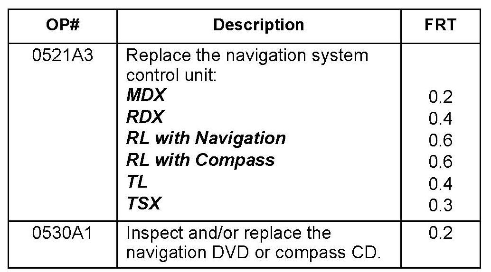

Navigation - DVD Rear Error/No Route Displayed/DVD Scratched
08-035July 6, 2012
Applies To:
See VEHICLES AFFECTED
DVD Read Error, or No Route Displayed, and Navigation DVD Is Scratched
(Supersedes 08-035, dated June 11, 2010, to revise the information marked by the black bars and asterisks)
REVISION SUMMARY
*Under VEHICLES AFFECTED, the 2010 TSX model
information was changed.*
SYMPTOM
One or more of the following symptoms are present:
^ The message "DVD read error (incorrect DVD disc) please consult your dealer," or "DVD disc reading error (unformatted), please consult your dealer," appears on the display.
^ After entering an address, the navigation system does not display a route or freezes up.
^ The navigation DVD or compass CD is scratched.
PROBABLE CAUSE
The navigation DVD unit (or compass CD unit - RL only) is scratching the disc with circular scratches, scuffs, or arcs about 6 to 12 mm from the outer edge of the disc (see images).
VEHICLES AFFECTED
NOTE:
This bulletin does not apply to vehicles with an HDD-based navigation system.
CORRECTIVE ACTION
Replace the navigation unit (or the compass unit), the
navigation DVD (or compass CD), or both.
PARTS INFORMATION
For information on navigation unit ordering, see Service Bulletin 06-001, Audio, Navigation, and RES Unit In-Warranty Exchange and Out-of Warranty Repair.
WARRANTY CLAIM INFORMATION

The normal warranty applies.
Failed Part: P/N 39546-SEP-A51
Defect Code: 03217
Symptom Code: 03272
Skill Level: Repair Technician
DIAGNOSIS
NOTE:
If a disc is damaged by something other than the navigation or compass unit, like rough handling by the client, disc replacement is not covered by warranty.
1. Eject the disc from the navigation or compass unit.
Refer to the applicable service manual, or online, enter keywords NAVI DVD for location and instructions on ejecting the disc.
2. Check that the disc is the correct color and version for the vehicle. Refer to Service Bulletin 05-018, Navigation System Information and DVD Information and Inspection, for more information. If the disc is not the correct base version or higher, replace it and retest.
NOTE:
The RL compass model uses a similar looking CD. If you replace it with a DVD, you will see a DVD read error message.
3. Check the read surface of the disc for circular scratches, scuffs, or arcs.
NOTE:
If there is damage on the disc but not circular scratches, scuffs, or arcs, (damage not caused by the navigation unit) you may need to replace the disc, but not the navigation or compass unit.
Does the disc have circular scratches, scuffs, or arcs?
Yes- Go to REPAIR PROCEDURE.
No - Do the update procedure in Service Bulletin 07-022, Navigation Software Updates for Daylight Saving Time (DST), DVD Read Error Message, and Other Listed Symptoms. If the problem still does not go away, suggest to the client that they replace the disc and retest.
REPAIR PROCEDURE
1. Replace the navigation unit or compass unit:
^ Refer to the Navigation section of the appropriate service manual, or
^ Online, under Search by Vehicle, enter keywords NAVI REMOVE and select Navigation Unit Removal/Installation (With Navigation) from the list.
NOTE:
Use the RL navigation unit removal instructions to remove the compass unit.
2. Remove the disc. Look at the disc label to identify the version (VER). To order the replacement disc, call, select option 3 for dealerships, then select option 2 for map patches, and specify that you are replacing a disc for circular scratches. Have the following information ready, and give it to the ordering clerk to ensure you get the correct disc:
^ The order is for service bulletin 08-035.
^ The VIN.
^ The disc version on the label.
NOTE:
^ For 2007 DVDs with version 4.55 or 4.56, request a replacement DVD with version 4.56A.
^ For 2008 DVDs with version 4.61, 4.62, or 4.63 request a replacement DVD with version 4.63.
^ For 2007-08 RL compass units, use CDs with version 4.54 thru 4.56 only. For 2009-10 RL compass units, use CDs with version 4.63 thru 4.71 only. If you insert the wrong CD, or a navigation DVD, a DVD read error message appears on the display.
^ Make sure you return the damaged disc. Put it in a protective sleeve or jewel case with the faulty navigation or compass unit. If you do not return the disc with the unit, your account will be debited for the unit.
3. Install the replacement disc into the new unit.
NOTE:
The disc is mailed to your dealership, and the VIN is printed on the mailing label to make sure the disc is installed in the correct vehicle.
4. Do the update procedure in Service Bulletin 07-022, Navigation Software Updates for Daylight Saving Time (DST), DVD Read Error Message, and Other Listed Symptoms if applicable. Check online, and apply any other navigation patches or software updates for the navigation unit.